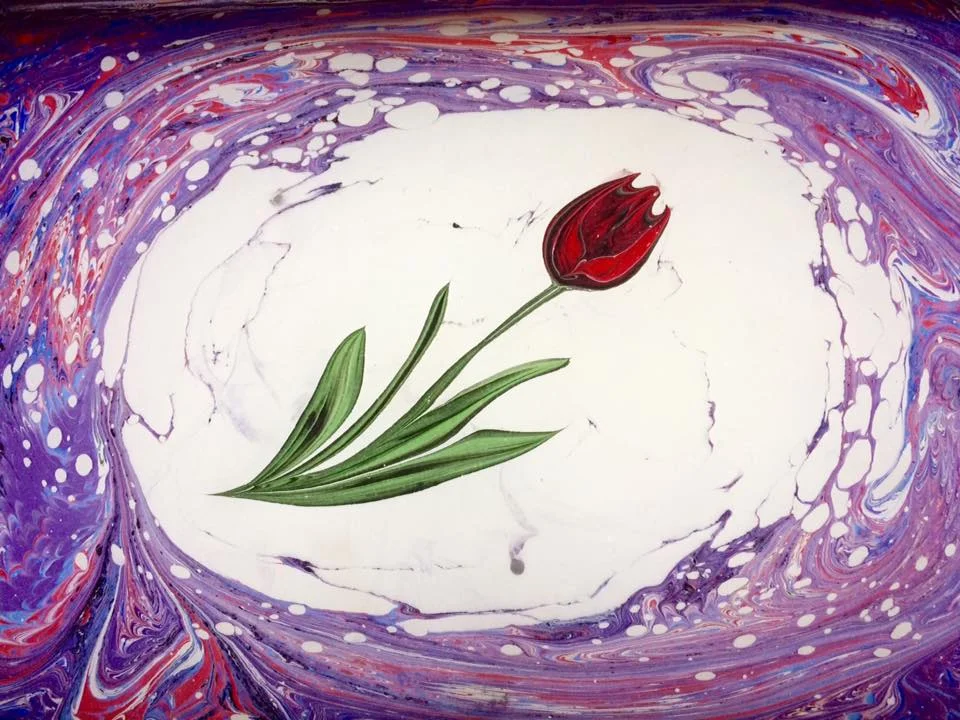
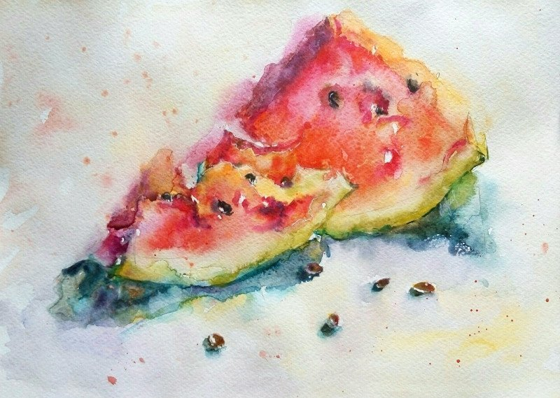
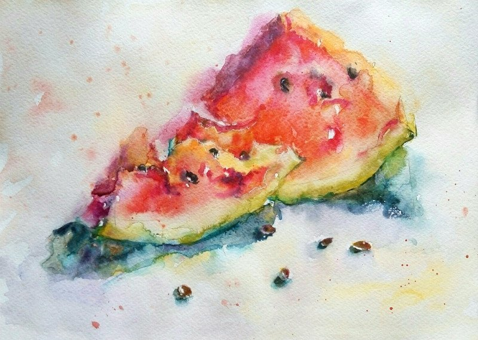

Живопись
Погрузитесь в мир цветов и творчества в нашей художественной студии, где страсть встречается с вдохновением. Наш раздел живописи предлагает широкий спектр художественных опытов, адаптированных для художников всех уровней и стилей. Независимо от того, начинающий вы или опытный мастер, наша студия предоставляет поддерживающую среду для исследования и самовыражения через различные техники живописи.
Акварель - погрузитесь в мир прозрачности и текучести на наших занятиях по акварели. Научитесь мастерству смешивания цветов и создания эфемерных, мечтательных пейзажей и портретов.
Масло - откройте для себя богатую, бархатистую текстуру масляной живописи. Наши занятия помогут вам освоить процесс наложения цветов, создания глубины и передачи тонкостей света и тени.
Пастель - мягкая, деликатная и выразительная, пастельная живопись — это искусство, требующее тонкости и контроля. На наших занятиях вы научитесь использовать пастели для создания нежных, мечтательных пейзажей и портретов.
Эбра Откройте для себя древнее искусство Эбра — традиционную турецкую технику, которая включает создание сложных узоров на воде. Наши занятия познакомят вас с искусством мраморирования, где вы научитесь манипулировать цветами и создавать потрясающие, уникальные дизайны.
Что вас ждет
- Профессиональное руководство от опытных преподавателей
- Расслабляющая, поддерживающая атмосфера, способствующая творчеству и развитию
- Доступ к качественным художественным материалам и оборудованию
- Возможности продемонстрировать свои работы и пообщаться с единомышленниками
- Присоединяйтесь к нашему сообществу
Просмотрите наше расписание занятий, мастер-классы и мероприятия, чтобы найти подходящий вариант для себя. Мы с нетерпением ждем, что вы создадите!
Эбру — это техника рисования на поверхности воды с последующим переносом изображения на бумагу или другую твёрдую основу (дерево, ткань , керамику, кожу).
Акварель по - мокрому технику также называют «работой на воде», поскольку художник перед тем, как взяться за кисть, хорошенько смачивает бумагу. Основная особенность техники — непредсказуемость результата
 
